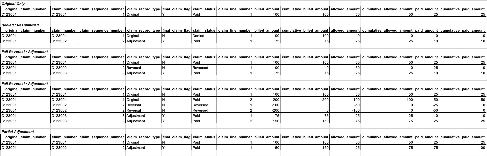

3 Adjustments, Denials, and Reversals
3.1 Overview
One of the trickiest issues to deal with in claims data is adjustments, denials, and reversals (what we often refer to as “ADR”). There are three types of claim records (original, adjustment, and reversal) and three types of claim payment statuses (paid, denied, reversed). How you model claim record types and payment statuses will impact the analytics you’re able to perform on your claims data.
Let’s take a step back and think about the types of analytics we perform on claims data. At the highest level, we think there are two categories of claims analytics:
- Cashflow analytics
- Population health analytics
Cashflow analytics includes analyses like calculating Incurred But Not Reported (IBNR) claims. This sort of calculation is done by an actuary to measure and manage cash reserves for an insurance company or health plan. To perform this type of analysis you need to see every iteration of a claim that occurred. For example, if a claim was originally paid, then reversed and adjusted weeks later, you need to have full visibility into these payments and the dates when the payments occurred. Leveraging multiple iterations of a claim is also useful for the analytics team when it’s necessary to align analytics with financial reporting, or when it’s necessary to understand when a claim was first received or processed (the original claim received or paid date).
Population health analytics includes analyses around the cost of care, diagnosis and treatment, utilization, and risk of a patient population. This type of analysis is more concerned with the final amounts paid (rather than intermediate adjustments and reversals) and the dates when services were delivered (as opposed to paid dates).
The trick is to model your claims data in such a way that supports both types of analyses, satisfying your cashflow analysis folks (e.g. actuaries and financial analysts) and your population health analysis folks (e.g. quality measures folks, data scientists, epidemiologists, also actuaries here too, etc.). This involves keeping the multiple iterations of the claim available for cashflow analytics while allowing population health and other analytics use cases to only worry about the final disposition, which we’ll detail below.
Let’s quickly define the three different types of claim records:
- Original: This claim record type is the first (and sometimes only) claim submitted.
- Adjustment: This claim record type is submitted if the original claim was denied or if the provider found an issue with the original claim they needed to correct.
- Reversals: This claim record type is submitted if the original claim was paid, but then an adjustment was needed and the original claim needed to be backed out.
The three types of payment statuses are straightforward:
- Paid: Indicates the claim was paid (positive paid amount)
- Denied: Indicates the claim was denied (zero paid amount)
- Reversed: Indicates the claim is reversed (negative paid amount)
3.2 Modeling ADR
It’s easiest to illustrate how adjustments, denials, and reversals manifest by looking at example scenarios. By looking at examples we can also see how to model ADR claims to support both cash flow and population health analytics.

Let’s walk through each scenario in the image above. As we do, pay careful attention to how the cumulative amounts change from the original claim, to the reversal, to the adjustment claim. Modeling the amounts this way is what enables both cashflow and population health analytics.
3.2.1 Scenario 1: Original Only
This first scenario is the simplest. There’s only a single claim, with a single claim line, and it’s the original claim (see claim_record_type) as you would expect. This claim has been paid (see claim_status). The billed, allowed, and paid amounts for this claim are equal to the cumulative amounts. You’ll see how these individual and cumulative claims differ in subsequent scenarios.
3.2.2 Scenario 2: Denied / Re-submitted
In the second scenario, the original claim was denied (see claim_status), so an adjustment claim was submitted and adjudicated. The original claim could have been denied for any number of reasons. The billed amount on the original claim was $100 and the allowed and paid amounts were $0 (no payment was allowed since the claim was denied).
The billed, allowed, and paid amounts on the second claim (the adjustment claim) were $75, $25, and $10, respectively. Now pay attention to the cumulative billed, allowed, and paid amount columns. These columns sum up the current and previous claim billed, allowed, and paid amounts.
There’s one unusual thing about cumulative_billed_amount in this scenario. For denied claims, you don’t add the billed_amount to cumulative_billed_amount total. Doing so would screw up the billed-to-allowed ratio of the cumulative_billed_amount and cumulative_allowed_amount fields.
Note that the adjustment claim gets a new claim_number and we associate this claim ID with the original claim via original_claim_number.
3.2.3 Scenario 3: Full Reversal / Adjustment
In this scenario, the original claim was completely reversed and then an adjustment claim was subsequently submitted. The cumulative billed, allowed, and paid amounts match the billed, allowed, and paid amounts from the final adjustment claim because the reversal claim negated all the amounts from the original claim.
3.2.4 Scenario 4: Full Reversal / Adjustment (w/ multiple lines)
This scenario is similar to the third scenario but provides an example of how a full reversal and adjustment will look with multiple claim lines. Note that cumulative amounts are tracked at the line level.
3.2.5 Scenario 5: Partial Adjustment
This final example shows how a claim may be partially adjusted, with an additional positive or sometimes negative payment amount.
3.3 How to Identify ADRs
The number one thing you can do is ask the insurance company or health plan how to identify ADRs in the claims dataset. If they can’t tell you, that’s a bad sign (but unfortunately this happens a lot). In that case see below.
The exact manner in which claims adjustments and reversals manifest in your claims dataset may not be obvious or easy to identify. However, they typically show up in 1 of 3 ways, depending on how the health insurer adjudicates their claims.
- Scenario 1: Health insurer creates a new claim ID for each additional reversal and/or adjustment claim record
- Scenario 2: Health insurer uses the original claim ID for each reversal and/or adjustment claim, but includes an adjustment/reversal code on each claim to indicate whether each new record was a reversal or adjustment
- Scenario 3: Health insurer uses a combination of old and new claim IDs for reversals and/or adjustments (this is essentially a combination of scenario 1 and 2)
In our experience working across dozens of healthcare claims datasets, each scenario is equally common.
3.3.1 Scenario 1: New Claim IDs for Each Adjustment/Reversal
Dealing with new claim IDs is the most difficult scenario because you are in effect trying to determine a linkage across claim IDs when there isn’t a piece of data that tells you this. That is, you need to identify new Claim IDs that are related to the original Claim ID. This can be tricky, but here are some steps you can follow to do this:
- Start by looking for patients with multiple claims (i.e. multiple claim IDs).
- To identify reversals, look for claims where all the data elements match, except the paid amount and the paid date.
- To identify adjustments, look for claims that have a reversal, then look for subsequent claims where most of the information is the same but there may be minor differences (e.g. place of service code changed from 11 to 20).
3.3.2 Scenario 2: Original Claim IDs for Each Adjustment/Reversal
This is the simplest scenario. The payer / health plan has already done the bulk of the work for you - explicitly telling you which claims were adjusted / reversed and whether the claim was paid or denied. However in practice this information is usually not completely available, so like most things in healthcare data there tends to be a bit of detective work to fill in the gaps.
3.3.3 Scenario 3: Combination New and Original Claim IDs for Each Adjustment/Reversal
Sometimes adjustments and reversals will appear as new claim IDs, but these claim IDs will include the original claim ID plus some additional characters. For example:
- original claim ID: A1234
- adjustment claims ID: A12341
- reversal claim ID: A12342
In this example you can see the subsequent claims have an integer appended to them.
3.4 Real-world Impacts of ADRs
In an ideal world, all population health analytics should be based on a claims dataset that represents the true set of services rendered by the provider to the patient and payments rendered by the health insurer to the provider. However, unless you account and correct for claims adjustments and reversals in raw claims data, you are including records in your analysis for services that may never have been delivered. The problem with downstream analytics is much more on the utilization side than on the payments side.
Payments
Let’s start by exploring the impact on payments first, since it is minimal and more straightforward. At the end of the day, claims adjustments and reversals will directly flow through to aggregate payment amounts (e.g. payments aggregated to PMPM level), generating the true/correct payment statistics. For example, if a claim was submitted in error and then later a reversal was submitted, the sum of the paid amount for these two claims will be zero, which is the true paid amount we would expect. As this example demonstrates, the aggregate payment amounts in any analysis (e.g. trending total medical PMPM by month) will be correct by default, without any changes made to the raw claims data. Therefore, it’s not usually necessary to identify and correct adjustments, reversals, or denials before calculating payment statistics.
Utilization
However, the impact on utilization analytics is not as straightforward. In the simple example above we noticed that the place of service code changed from 11 (office visit) to 20 (urgent care). Place of service code is an important piece of information used to group claims into encounters. Without taking into account that a reversal and adjustment was made for this claim, it looks like two place of service codes exist for the same visit, and we are unsure which code to use to assign an encounter type to the claim (i.e. should the claim be labeled an office visit or urgent care visit).
This has serious consequences for utilization analytics and also impacts payment analytics if we want to analyze payments by care setting. For example, suppose we are interested in looking at spend across different care settings, e.g., acute inpatient, inpatient rehab, emergency department, urgent care, and office visit. Without properly identifying and correcting claims adjustments and reversals we won’t be able to bucket spend or number of visits in the appropriate category.